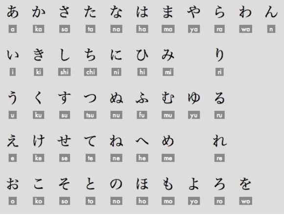
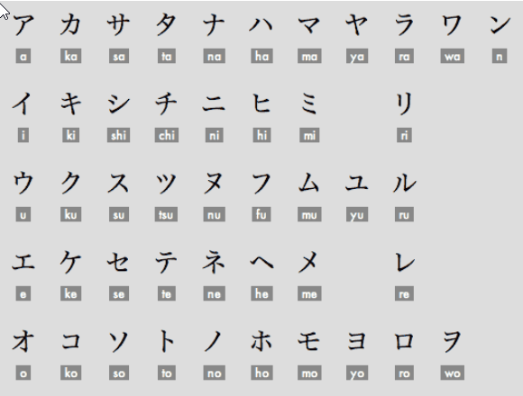

Learning how to read japanese
Kana
The most important first step in learning Japanese is to memorize hiragana and katakana by heart. (Quick note: I've chosen not to add an “s” to Japanese words like hiragana and katakana.) Once you know them, in theory you can read everything written in Japanese — at least on a phonetic level. (More details about this later.)There are also many common combinations of kana (like small ゃ/ゅ/ょ, っ, or ん followed by certain sounds), but they're quite intuitive. You don't really need to memorize them separately — you'll pick them up naturally just by reading.
Hiragana:
Katakana:
 Now you can read anything you want in Japanese!
This is thanks to furigana (also known as ruby text or yomigana),
which consists of small kana (usually hiragana) printed above or beside kanji to show their pronunciation.
It serves as a reading aid, especially helpful for children, language learners, and anyone unfamiliar with certain
kanji.
Furigana is commonly used over every kanji in children's books. As the material becomes more advanced (aimed at
older children or adults), fewer and fewer kanji get furigana.
But don't worry — this won't be a problem when reading on
a computer. Many digital tools and apps can help display dictionnary for example to
look up unknown kanji instantly. (We'll cover how to use Yomitan — a simple, extremely helpful browser extension/tool — in more detail later.)
Alternatively, when you encounter an unfamiliar kanji, you
can simply check a dictionary. Japanese dictionaries typically list the kanji along with its furigana (hiragana reading)
right next to it — and usually without roumaji (our Latin alphabet: a, b, c, etc.).
Anki
What's Anki ?
Anki is a free, powerful, and widely used flashcard program (also called a spaced repetition system or SRS app) designed
to help you memorize and retain information long-term with minimal effort. It works by combining two key evidence-based
techniques from cognitive science:
- Active recall— instead of passively re-reading notes, you actively try to remember the answer before flipping the card
(this strengthens memory far better than highlighting or re-reading).
- paced repetition — the app uses a smart algorithm to schedule reviews at increasing intervals. Cards you find easy are
shown less often (maybe weeks or months later), while difficult ones come back sooner — exactly when you're about to forget
them. This fights the natural forgetting curve very efficiently.
Why is Anki especially popular for learning japanese?
It's one of the most effective tools for mastering:
- Hiragana and katakana (quick recognition drills)
- Kanji (meanings, readings, stroke order, compounds)
- Vocabulary (words in context, with audio/images if you want)
- Grammar points and example sentences
Huge communities share ready-made "decks" (sets of flashcards), like Core 2k/6k vocab, RTK (Remembering the Kanji),
Tango N5-N1 series, or anime-sentence decks. You can download them for free from AnkiWeb and start immediately, or
customize your own.
How to install and setup Anki
Start by downloading Anki by clicking on the official website by clicking on this link.
This should looks like this on PC once installed. Without the numerous decks I already have installed.
Now, before we dive into the Anki application itself, let's start with the basics: how to add pre-made decks (especially shared ones from AnkiWeb) and later how to create your own decks from scratch.
Adding existing decks
There are numerous pre-made decks available on AnkiWeb and elsewhere, so which one should you start with? I recommend beginning with the one I personally started with (and many others swear by in 2026): Kaishi 1.5k — a modern, highly regarded vocabulary deck designed specifically for beginners.
Here's how the deck presents cards (before you reveal the answer):
- The kanji without furigana.
- A sentence including the kanji without furigana.
Here's how the deck presents cards (after you reveal the answer):
- The kanji with furigana.
- One of the possible translations (the deck often keeps only the most common or
primary meaning, even though many Japanese words have multiple nuances or uses).
- The sentence including the kanji with furigana.
- The sentence translation.
- An audio including the kanji pronunciation and the sentence pronunciation.
- An illustration